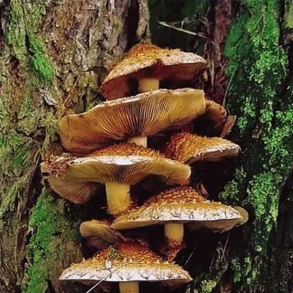

Laisvalaikis virtuvėje: GRYBŲ MIŠRAINĖ ŽIEMAI
Puslapiai
Pradinis puslapis2011 m. rugpjūčio 13 d., šeštadienis
GRYBŲ MIŠRAINĖ ŽIEMAI
Šitos mišrainės jau eilė metų vis ragaujam pas anytą, labai skani. Todėl šiemet, kai iš mamos gavau skanių grybų - voveraičių, pasidariau jos pati.Mišrainė patinka visiems, kurie jos ragavę..
Reikia: 1 stiklainio (500 g) pomidorų padažo ~1,5 kg jau išvirtų voveraičių panašiai kiek grybų reikia ir svogūnų, ir morkų - jų nebus perdaug, kad ir kiek naudosit druskos, juodųjų maltų pipirų pagal skonį nemažai aliejaus kepimui
Taip pat reikia: stiklainių + dangtelių
Viskas labai paprasta! svogūnus supjaustyti norimo dydžio kubeliais ar plonais griežinėliais. Į keptuvę pilti aliejaus taip negailint (maždaug, kad užsidengtų aliejumi visas keptuvės plotas) ir suberti svogūnus, kepti kol suminkštės. Kol kepa svogūnai pasiruošti morkas, jas nuskusti ir sutarkuoti burokine tarka. Kai iškeps svogūnai, juos sukrėsti į didelį puodą/ troškintuvą. Į keptuvę vėl pilti nemaižai aliejaus ir kepti morkas, irgi kol suminkštės (ir svogūnų ir morkų man gavosi maždaug po vid. dydžio pilną keptuvę, žinoma po kepimo jų šiek tiek sumažėjo). Morkas ir grybus irgi sukrėsti pas svogūnus į puodą, taip pat supilti pomidorų padažą, viską gerai išmaišyti ir troškinti maišant ant nedidelės ugnies ~20-25 minutes. Man prireikė dar aliejaus, tai kelis kart dar įpyliau po šlakelį. Nepamiršti pasūdyti ir pagardinti pipirais, vis ragaujant, reik žinoti, kad pastarųjų berti teks nemažai, nes gaunasi nemažas kiekis mišrainės. Ir vis maišyti maišyti. Pasiruošti stiklainius ir dangtelius, juos išgarinti ar sterilizuoti verdančiu vandeniu. Krėsti paruoštą mišrainę ir sandariai uždaryti. Laikyti vėsiai.
Tinka valgyti iškart arba kada norisi greitai ir skaniai užkąsti. Skanu su duona tiesiog šaltą mišrainę arba pašildytą. Taip pat patroškinti su bulvėmis ar net sriubai!!!
Man gavosi 3,5 l mišrainės .
SKANAUS!!!
Pranešimą parašė Reda ties 00:17 Siųsti el. paštu BlogThis! Bendrinti sistemoje „Twitter“ Bendrinti sistemoje „Facebook“ Bendrinti sistemoje „Pinterest“ žymės: Daržovės , Grybai , vakavimas/ konservavimas , Žiemai ir ne tik
16 komentarų:
oditele 2011 m. rugpjūčio 13 d. 01:10 voveraitėėėėės...:))) slabna iš karto pasidarė..:))
bet ar jos nepasidaro per minkštos taip ilgai patroškintos, o prieš tai dar ir išvirtos?:)
O ne, tikrai nepasidaro perminkštos ODITELE :), voveraitės toks grybas, kad jis turbūt ir labai labai ilgai verdant ar troškinant neištižta, nepasidaro pernelyg minkštos. Žinoma galima ir trumpiau troškinti, aš čia tą laiką parašiau nuo pradžios kaitinimo, jei laiką skaičiuoti nuo užvirimo, tai ir 10-15 minučių užtenka.
Tiesa, o grybus kai apverdu, tai nuo užvirimo, dar 5 min. paverdu ir viskas :)
Man irgi voveraitės kone pats pačiausias grybas :) dar labai patinka žaliuokės, bet retai jų gaunu ragauti :) beje šiai mišrainei taip pat jos puikiai tinka..
Oi,Reda, atsiusk tos misraines :-))))
Atsakyti Panaikinti Atsakymai Atsakyti Reda 2011 m. rugpjūčio 13 d. 11:43LINUT, šią palikau kaime, nes matai rūsio neturim, bet šiandien dariausi grybų ikrus, tai šios galiu atsiųsti :DDD, kur gyveni?:))) ;)
Atsakyti Panaikinti Atsakymai Atsakyti Neringa 2011 m. rugpjūčio 13 d. 11:52as panasiai darau tik ne ziemai, maisau su pupelem virtom ir gaunasi puiki kisraine :)
Atsakyti Panaikinti Atsakymai Atsakyti Reda 2011 m. rugpjūčio 13 d. 14:03Tikiu, kad su pupelėmis čia būtų dar skaniau :)
Atsakyti Panaikinti Atsakymai Atsakyti aguonele 2011 m. rugpjūčio 16 d. 13:14Galvoju ar nereikėtų man jos pasidaryti? Nu bet iš kur gauti laiko ir stiklainių... :( bet kaip noriu....negali siuntinėlio pasiųsti? :DD
Atsakyti Panaikinti Atsakymai Atsakyti Reda 2011 m. rugpjūčio 16 d. 13:53Gal Tau laiko ir stiklainių pasiųsti geriau?? :DD nenoriu atimti pačio džiaugsmo - gaminimo :) o tai tik valgymo malonumas liktų :DD bet galiu patikinti, jei mėgsti grybus, ši mišrainė nepatikti negali :) ;)
Atsakyti Panaikinti Atsakymai Atsakyti Daiva 2012 m. rugpjūčio 14 d. 07:07Ir as pasigaminau sios grybu misraines, itariu ziema bus skanumelis :)
Atsakyti Panaikinti Atsakymai Reda 2012 m. rugpjūčio 15 d. 09:03Džiaugiuos :)
Panaikinti Atsakymai Atsakyti Atsakyti Vida 2014 m. rugpjūčio 28 d. 01:51 Ačiū Redai už mišrainės receptą,vakar pasigaminau,labai skanu,mano šeimynai patiko:-)
O i stiklainius deti karsta misraine ar atvesinti?
Atsakyti Panaikinti Atsakymai Reda 2014 m. rugsėjo 12 d. 10:00 Sveiki,
Karštą ;)
Labas vakaras, o ar nesuges mišrainė laikoma vėsioje patalpoje? (mes turime tik garažą, o ten nepasakyčiau, kad vėsu).....kur man būtų geriausia ją laikyti? gal šaldytuve? ir kiek laiko galima ją laikyti? ačiū, rytoj gaminsiu.....
Sveiki, gal geriau tada laikykite šldytuve. Sėkmės :)
Panaikinti Atsakymai Atsakyti Atsakyti Virginija 2017 m. rugsėjo 7 d. 11:35Gal atsiustumet recepta i mesendzeri nes ne visad galiu paziuret sioje grupeje be interneto
Atsakyti Panaikinti Atsakymai Atsakyti Pridėti komentarą Įkelti daugiau...
Naujesnis pranešimas Senesnis pranešimas Pradinis puslapis Užsisakykite: Rašyti komentarus (Atom)
MISS DISH ceramics - rankų darbo unikalus indai pagaminti su didelia meile
Laisvalaikis virtuveje tinklarascio autores keramikos darbai
Translate
Tinklaraščio archyvas
► 2013 (4) ► balandis (4) ► 2012 (35) ► birželis (2) ► gegužė (5) ► balandis (2) ► kovas (6) ► vasaris (8) ► sausio (12) ▼ 2011 (146) ► gruodis (3) ► lapkritis (9) ► spalis (9) ► rugsėjis (10) ▼ rugpjūtis (11) PERSPĖJIMAS!!! NUOSTABIEJI AUŠRROS AGURKŲ GRIEŽINĖLIAI ŽIEMAI CUKINIJŲ ANANASAI BANDELĖS SU VARŠKĖS IR PERSIKŲ ĮDARU AVIEČIŲ UOGIENĖ SU ROMU PRAŠMATNUS OBUOLIŲ PYRAGAS VYNIOTINIS SU PLAKTA GRIETINĖLE IR AVIETĖMIS GRYBŲ MIŠRAINĖ ŽIEMAI ŽUVIES IR BULVIŲ APKEPAS Aguonėlės duona su avižiniais dribsniais Paprika marinuota su medumi ► liepa (13) ► birželis (20) ► gegužė (27) ► balandis (22) ► kovas (22)Žymės
Aguonos (3) Antrieji patiekalai (61) Apkepai (2) Bandelės (9) Biskvitas (7) Blynai (14) Bulvės (16) Cinamonas (19) Citrinos (8) darzoves (1) Daržovės (45) Dešrelės (3) Duona (20) Duona su raugu (7) Džiovinti grybai (2) Džiovinti vaisiai (5) Feta sūris (1) Filo tešla (1) Grybai (6) Grietinė (2) Grietinėlė (14) Jogurtas (4) Kalakutiena (1) Karamelė (2) Keksiukai (1) kiauliena (8) Kiaušiniai (3) Kietasis sūris (7) Kita (5) Kokosas (8) Kondensuotas pienas (7) konservuoti vaisiai (2) Krabų lazdelės (1) Ledai (3) Malta mėsa (13) Marcipanas (3) Marinatas (2) Mascarpone sūris (1) Mišrainės (1) Moliūgas (2) Obuoliai (7) Patiekalai su vynu (2) Pica (4) Pyragai (22) Pyragėliai (8) Prieskoninės žolelės (3) Receptai su mielėmis (29) Ricotta varškė (11) Riešutai (10) Saldainiai (4) Salotos (1) Sausainiai (20) skanumynai (73) Soja (1) Sriubos (4) Sumuštiniai (1) Sūris (28) TAPYBA ANT DUONOS (1) Tortai (9) Troškiniai (5) Uogienės (1) Uogos (5) Užkandžiai (23) Vaisiai (9) vakavimas/ konservavimas (8) Varškė (26) Vyniotiniai (7) Vyšnios (1) Vištiena (24) Želė (4) Žiemai ir ne tik (8) Žuvis (2)Populiarūs įrašai
MOLIŪGŲ DŽEMAS Tikras atradimas!!! Negaliu patikėti, kad MOLIŪGAI šitoks gėėėris!!! Prasideda mano kelionės ir išbandymų metas su šia nuostabia daržove :))... KIJEVO KOTLETAI - kitaip Skubu skubu Daivule ;) vien dėl Tavęs kuo greičiau įdėti šio skanėsto receptuką :D taigi, gaudyk ir skanių savaitgalio pietų Jūsų šeimynėlei... Kiaulienos šonkauliukai Kas nemėgsta šonkauliukų, argi gali kažkas jų nemėgti? Turbūt gali tik tie žmonės, kurie visiškai nevalgo mėsos, bet tie kas mėgsta, netiki... GRYBŲ MIŠRAINĖ ŽIEMAI Šitos mišrainės jau eilė metų vis ragaujam pas anytą, labai skani. Todėl šiemet, kai iš mamos gavau skanių grybų - voveraičių, pasidariau jo... PAPRASČIAUSIAS BŪDAS PASIGAMINTI SKANIĄ VARŠKĘ Nepasakysiu turbūt jokios naujienos, bet tik patikinsiu Jus, kad tai turbūt paprasčiausias ir pigiausias būdas pasigaminti begalo skanios ... CUKINIJŲ ANANASAI Už receptą begalo dėkinga LINAI !!! Superinis! paprasta ne tas žodis, o gaunasi vos ne tikri konservuoti ananasai, turbūt jei nežinotum ką v... KIAULIENOS ŠONINĖ TRAŠKIA PLUTELE Už idėją dėkinga ODITĖLEI , labai net labai patiko taip kepta šoninė! Paprasta, bet neprasta, kaip sakoma :)) Man skaniausia tiesiog su duo... ''Beždžionių'' duona-pyragas Tai nerealus receptukas, įdomus tiek gaminimo eiga, tiek - valgymo:). Cinamono mėgėjams idealus desertas. Vienu žodžiu - SKANUMYNAS, NE DUO... ORKAITĖJE KEPTI PIEVAGRYBIAI ĮDARYTI KALAKUTIENOS FARŠU Įdarytų grybų idėją jau seniai mačiau tai vienur (l. įdomus variantas pas VIKTORĄ ), tai kitur (viliojantis variantas be mėsos pas RENATĄ ),... Orkaitėje keptas sūris Už šį receptą labai dėkoju Vilmai !!! Jis nerealiai skanus!!! Nuo stalo dingo taip greit, kad nespėjau susivokti, kaip tai, jau nėr!!!??? Tu...MEILĖ
r.viluniene@gmail.com